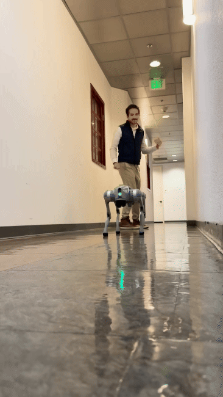
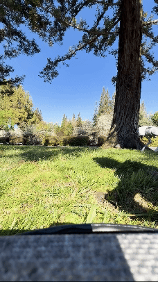
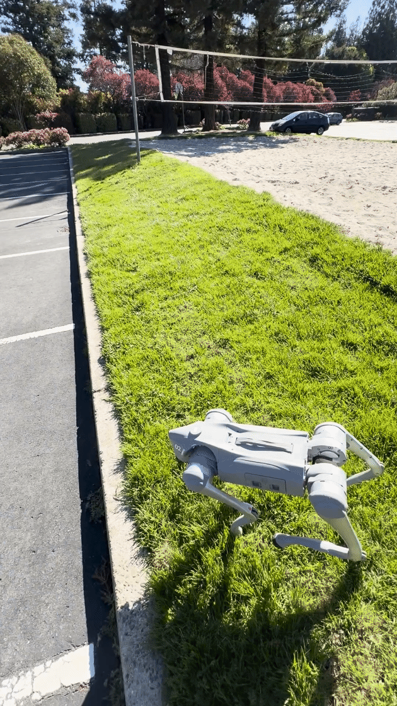
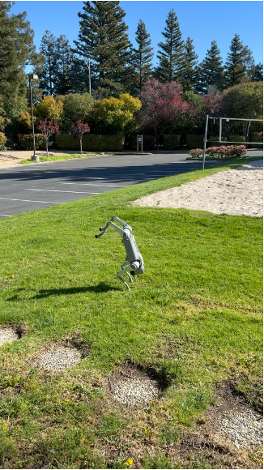
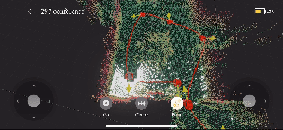
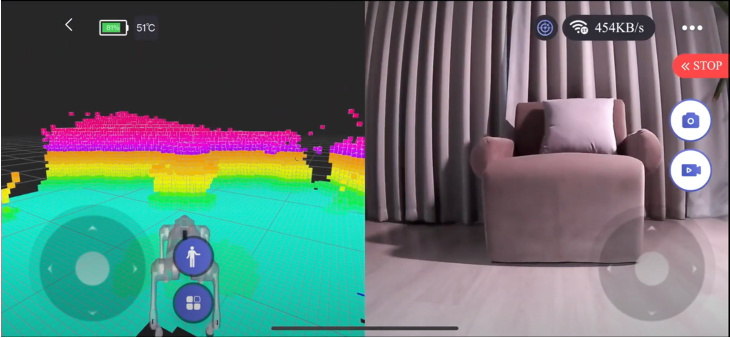
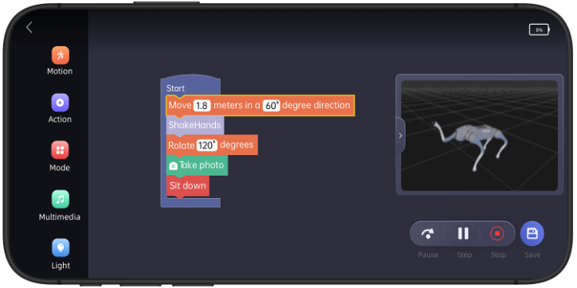
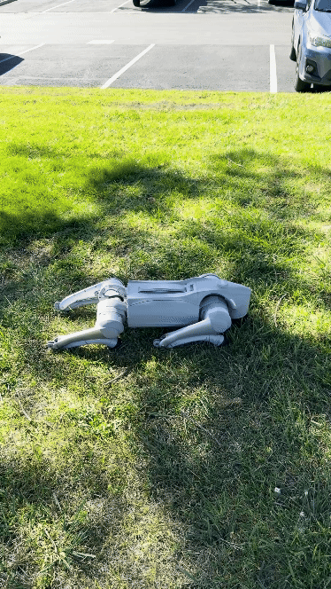

One of my clients purchased a Go2 Pro to test the utility of a quadruped robot as a mobile sensor bus, and I had the privilege of learning to operate it. Here’s what I found.

Teleoperation mode: The operator uses joysticks to control Go2 movement directly.
Follow mode: The Go2 can follow the operator as if it were a dog heeling. This function can be used with or without obstacle avoidance.
Single waypoint navigation: The operator can set a waypoint within a previously mapped area. The Go2 will navigate to the waypoint and avoid obstacles on the way.
Multi waypoint navigation / patrol: The operator can save a set of waypoints within a map and command the Go2 to loop through those waypoints, effectively creating a patrol route.
Mobility: The Go2 has great mobility. It can walk on grass and go up and down curbs with no problem.
Camera and LiDAR feeds: The built-in camera and ‘4D’ LiDAR are high resolution and low latency.
Tricks: For fun, the Go2 can shake hands, make hearts, dance, and even handstand.
Graphical programming: The Unitree app includes a rudimentary graphical programming feature. It’s more like toy programming for kids than it is actually programming the robot to do things that would be interesting for industrial purposes. There is an EDU model of the Go2 which provides proper SDK access, but it costs multiples of what the Pro and the Air models cost.






Extendability: The Go2 Pro and Air models do not come with the SDK enabled nor do they have pre-drilled mounting holes. This makes it difficult to extend the functions of the Go2 with other sensors and actuators.
98% obstacle avoidance: The obstacle avoidance is very good on the Go2 for such a cost-saving robot. That said, I have seen it run into a door on its way out of a small office while it was supposed to be in autonomous navigation and obstacle avoidance mode. So, the obstacle avoidance still isn’t 99.99%.
Start up: On start up, I saw the Go2 fail to stand and balance properly. Instead of righting itself, it flailed its legs around wildly. This happened three times on the first day I started using it and hasn’t happened again since then. I do not know how to repeat this problem and the Pro model does not show error logs to the user, so I have no way of knowing why this happened.
Unexpected shutdown: The Go2 has, without warning, powered off completely in the middle of its movement and collapsed to the floor. I suspect this happened because I was trying to control it with two different controllers at the same time, but in any case it was not a soft landing, there was no warning beforehand, and there was also no error message after the fact to explain to me what had happened.
